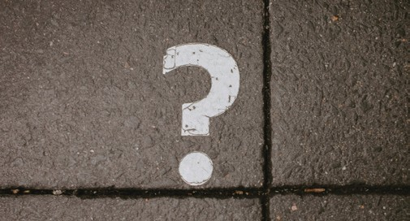
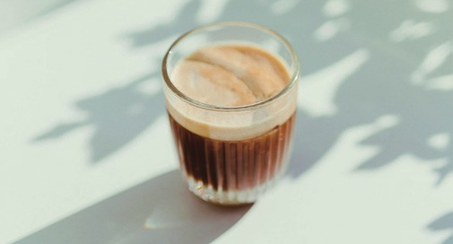
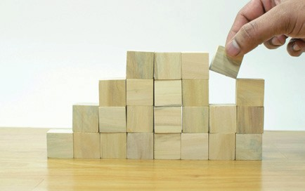
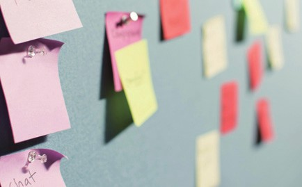
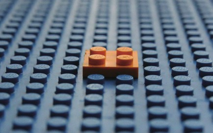
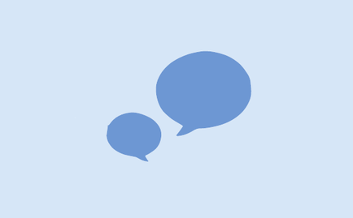

3줄 요약
- 같은 화면에서 다른 결과를 기대한다면, 익숙한 조건을 의심하고 새로운 질문을 입력해 볼 차례다.
- 직관은 말로 설명하기 전에 먼저 반응하는 감각이고, 그 신호를 흘려보내지 않을 때 발견의 실마리가 된다.
- 경험은 생각과 현실 사이의 간격을 확인하게 하고, 돌아보고 바꿔 시도할 때 또 다른 발견으로 이어진다.
RE: SHIFT
새로고침! 화면은 그대로인데, 무언가 달라져 있을 때
당연하게 여겼던 조건을 의심하고, 다른 가능성을 입력해 보는 것. 검색어를 바꾸거나, 질문을 달리하거나, 지금까지 선택하지 않았던 메뉴를 눌러보는 것처럼. 익숙한 화면에 새로운 입력을 더하는 순간, 전혀 예상하지 못한 결과가 나타나기도 한다.
새로운 장면은 완전히 다른 세계로 이동해야만 만날 수 있는 것이 아니다. 같은 풍경을 다른 각도에서 바라보고, 익숙한 방식에 낯선 시도를 더할 때 비로소 나타나는 장면도 있다.
하지만 같은 화면에서 다른 결과를 기대한다면, 무언가 달라져야 하지 않을까?
지금 필요한 새로고침은 무엇일까?
2027년, 익숙한 답을 다시 확인하는 대신 새로운 질문을 입력해 볼 차례다. 우리가 불러올 다음 장면은 어쩌면 지금까지 한 번도 시도하지 않은 선택 안에 있을지 모른다.
직관은 새로운 질문을 떠올리게 하고, 경험은 그 질문을 현실에서 확인하게 한다. 때로는 직관이 먼저 길을 열고 경험이 그 가능성을 증명하지만, 경험이 쌓인 끝에 비로소 직관이 찾아오기도 한다. 새로운 발견은 어느 한쪽만으로 완성되지 않는다. 새로운 발견 앞에서, 당신은 일단 느낌이 오면 시작하는 편인가? 직접 해봐야 확신이 생기는 편인가?
직관이 먼저 알아보는 것
새로운 아이디어는 때로 아주 작은 감각에서 시작된다. 설명하기는 어렵지만 왠지 눈길이 가는 것, 문득 떠오른 생각, 남들은 지나쳤지만 유독 마음에 남는 장면 같은 것. 어떤 문제를 마주했을 때 논리적으로 따져보기 전에 먼저 떠오르는 해결책이 있기도 하고, 수많은 선택지 가운데 유독 하나가 마음에 걸리기도 한다. 직관은 이렇게 말로 설명하기 전에 먼저 반응하는 감각이다.
그렇다고 직관이 아무런 근거 없이 찾아오는 막연한 느낌만은 아니다. 그동안 보고 듣고 경험하며 쌓아온 정보와 감각이 의식적으로 정리되기 전에 순간적으로 반응하는 것이기도 하다. 오랜 시간 한 분야를 다룬 사람이 복잡한 상황에서도 빠르게 핵심을 알아보는 것처럼 말이다. 때로는 익숙한 경험이 새로운 가능성을 알아보는 눈이 되어준다.
중요한 것은 그 신호를 무심코 흘려보내지 않는 일이다. 당연하게 여겼던 것에 의문을 품고, 아직 말로 설명할 수 없는 생각에 조금 더 귀를 기울여 보자. 처음에는 사소하고 불분명했던 감각도 질문으로 발전시키고 들여다보면 새로운 발견의 실마리가 될 수 있다. 모든 생각에 즉시 답을 내릴 필요는 없다. 때로는 막연한 느낌을 조금 더 오래 바라보는 것만으로도 새로운 가능성을 만날 수 있으니까.
직관을 발견으로 이어주는 작은 습관

-
일단 적어두기
문득 떠오른 생각은 금세 사라진다. 완성된 문장이 아니어도 좋으니 단어나 짧은 메모로 남겨보자.
-
첫인상을 의심하지 않기
왜 좋은지, 왜 이상한지 바로 설명하려 애쓰지 않아도 된다. 그 느낌이 어디에서 왔는지 천천히 살펴볼 것.
-
질문을 바꿔보기
‘원래 이런 것’이라고 생각했던 일에 ‘다르게 할 수는 없을까?’라는 질문을 던져보자.

-
잠시 거리를 두기
산책하거나 다른 일을 하며 생각을 쉬게 해보자. 한발 물러났을 때 비로소 보이는 것이 있을 것이다.

경험이 쌓여야 보이는 것
생각만으로는 알 수 없는 것들이 있다. 직접 해보고, 예상과 다른 결과를 만나고, 다시 시도하는 과정에서 비로소 알게 되는 것들이다. 책이나 설명을 통해 충분히 이해했다고 생각했던 일도 막상 해보면 전혀 다른 문제에 부딪히곤 한다. 머릿속에서는 간단했던 일이 실제로는 여러 조건과 변수에 영향을 받기도 하고, 예상하지 못했던 작은 차이가 결과를 바꾸기도 한다. 경험은 생각과 현실 사이의 간격을 확인하게 해준다.
처음에는 보이지 않던 문제의 원인을 발견하기도 하고, 불가능하다고 여겼던 일에서 의외의 방법을 찾아내기도 한다. 한 번의 시도로 원하는 결과를 얻지 못하더라도 괜찮다. 어디에서 막혔는지, 무엇을 다르게 해야 하는지 살펴보는 과정 자체가 다음 시도를 위한 단서가 된다. 실패와 성공을 모두 거치며 쌓인 경험은 처음에는 미처 알지 못했던 것들을 구체적으로 이해하게 한다.
무엇이 잘됐고 무엇이 어려웠는지 돌아보며 다음 시도를 조금씩 바꿔보는 것. 익숙한 방법을 반복하는 대신 새로운 조건과 방법을 시도해 볼 때, 경험은 또 다른 발견으로 이어진다. 직접 부딪혀 얻은 깨달음은 누군가의 설명을 듣는 것과는 다른 깊이로 남는다. 그렇게 하나씩 쌓인 경험은 다음에 마주할 낯선 상황을 헤쳐 나갈 자신만의 기준이 되어줄 것이다.
경험을 발견으로 만드는 방법
-
결과보다 과정을 보기
성공했는지만 확인하지 말고 어떤 선택과 과정이 결과를 만들었는지 살펴보자.

-
실패의 이유 찾기
잘되지 않았던 경험에도 단서가 있다. 무엇이 예상과 달랐는지 구체적으로 기록해 보자.

-
한 가지씩 바꿔보기
방법이나 순서, 도구를 조금씩 바꾸어 시도해 보자. 작은 차이가 새로운 가능성을 보여줄 수 있다.

-
다른 사람의 경험 빌리기
나와 다른 방식으로 문제를 해결한 사람의 이야기를 들어보자. 혼자서는 떠올리지 못했던 방법을 발견할 수 있다.
